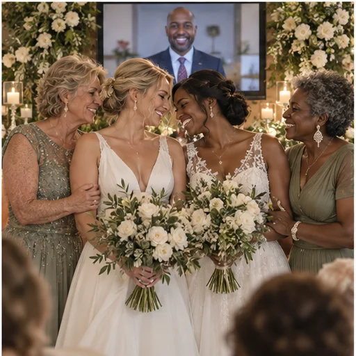

מה ללבוש לחתונה קטנה בזום? בגד חגיגי שמרגיש שלכם

הלבוש לטקס קטן הוא בחירה אישית. אפשר להגיע חגיגיים, נינוחים או כמו ביום רגיל; רעיונות על צבע, תאורה ונוחות מיועדים להשראה בלבד. מצלמה נדרשת לטקס עצמו, אך אין קוד לבוש או צורך להתכונן במיוחד למצלמה.
בוחרים לפי התחושה שרוצים לזכור
אם תרצו לבחור לבוש מיוחד, חשבו איך נוח לכם להרגיש: אלגנטיים, קלילים, מסורתיים, צבעוניים או פשוט כמו עצמכם. אין קוד לבוש אחד לחתונה קטנה. שמלה, חליפה, חולצה יפה, בגד מסורתי או הלבוש היומיומי שלכם כולם מתאימים, לפי רצונכם. גם תיאום בין בני הזוג הוא אפשרות בלבד.
אפשר להביא בחשבון ישיבה, עמידה או צילום, כדי שהלבוש יישאר נוח. אין צורך לקנות בגד חדש, למדוד מראש או לשנות את ההופעה. בחרו במה שנעים לכם לאורך הטקס.
בודקים איך הצבע והבד נראים במצלמה
אם תרצו, תוכלו לבדוק איך הבגד נראה במצלמה בשיחת ניסיון, באור יום או בתאורת הערב. פסים דקים או בד מבריק עשויים להיראות אחרת על המסך, אך אין איסורים; בחרו צבע וסגנון שאתם אוהבים.
אפשר לשים לב למה שנכנס לפריים ולבחור רקע ותאורה שנעימים לכם. אין צורך לצלם תמונת ניסיון או לקבל חוות דעת מאחרים. המצלמה היא כלי לטקס, וההופעה שלכם היא בחירה אישית.
מתאימים אביזרים בלי להכביד
אביזרים כמו עגילים, צעיף, עניבה, פרח או שעון יכולים להוסיף משמעות אם תרצו. גם בלי אביזר, או עם פריט משפחתי שכבר יש לכם, ההופעה שלמה. אין צורך לרכוש פריטים חדשים.
בחרו נעליים נוחות אם תרצו; אפשר גם להישאר בנעלי הבית מחוץ לפריים. הנוחות שלכם קודמת לכל ציפייה לגבי מראה חגיגי.
מכינים את הבגד ואת המראה מראש
אין צורך להכין בגדים מראש. אם תבחרו להתלבש במיוחד, בחרו פריטים שנעימים לכם. המצלמה נדרשת לצורך הטקס, ולצדה תקבלו מצוות הליווי את ההנחיות הטכניות הדרושות; בדיקת התאמת הבגד למצלמה היא אפשרות בלבד.
איפור, תסרוקת או סידור שיער הם לגמרי לבחירתכם. אין צורך בתאורה, מסרק או אביזר מיוחד; בחרו בהופעה שנעימה לכם והתרכזו ברגע עצמו.